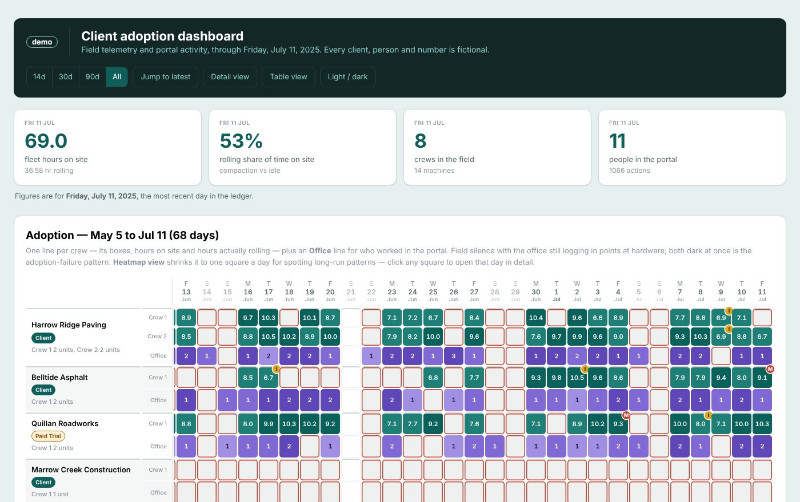

Client adoption dashboard
Customer success operations
The problem. Customers were paying for a hardware-and-software product their teams were meant to use every working day. Whether they actually did was scattered across system summaries, automated report emails and portal logins, so nobody could see an account slipping until renewal.
What I built. A daily record, one file per day, answering seven fixed questions per account, and a dashboard drawn from it: one row per team in the field, one row for office activity. Field silent while the office keeps logging in points to a hardware fault. Both dark at once is a customer walking away. The publish step checks its own output before it goes live.
What changed. It replaced a hand-kept spreadsheet tab as the team's record of customer adoption, and a run of red squares became the cue to call an account.
Shows: adoption and account-health monitoring, data modelling, Python, data visualisation. The same approach works for any product that leaves a usage trail.
Open the live demo